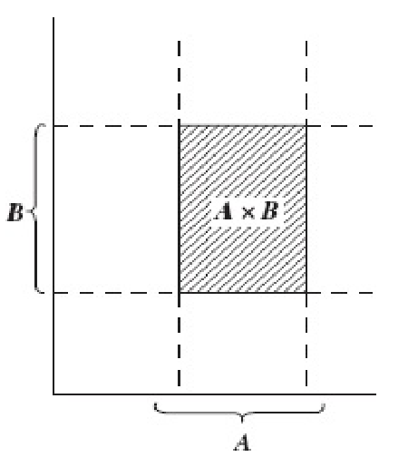
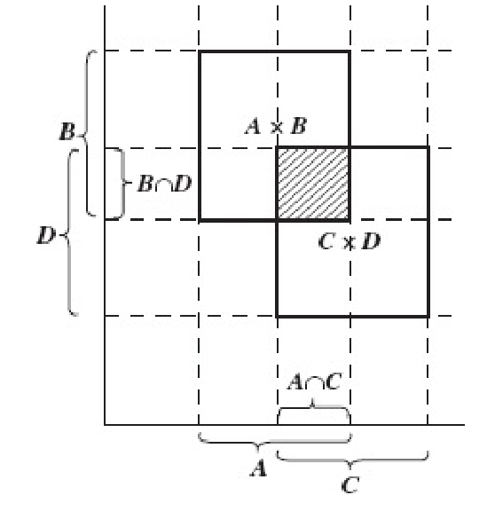

Classes and Sets 3 - Ordered Pairs and Cartesian Products
This post is about “Ordered Pairs and Cartesian Products”.
Last time, we covered the axiom of class construction, which allows us to form the class
\[ \{a\}=\{x:x=a\}. \]
This class contains only one element, \(a\), and we call this type of class a singleton.
Similarly, we can form the class
\[ \{a,b\}=\{x:x=a\ \text{or}\ x=b\}. \]
If \(a\ne b\), this class has two elements, \(a\) and \(b\), without any specified order. We call this type of class an unordered pair, or a doubleton. If \(a=b\), however, \(\{a,b\}=\{a\}\) is a singleton.
1.27 Theorem
If \(\{x,y\}=\{u,v\}\), then
\[ (x=u\ \text{and}\ y=v)\quad\text{or}\quad(x=v\ \text{and}\ y=u). \]
To prove this theorem, we can consider two cases: \(x=y\) and \(x\ne y\).
Proof. Suppose \(\{x,y\}=\{u,v\}\).
Case 1: \(x=y\). Since \(\{x,y\}=\{x\}\), every element of \(\{u,v\}\) must equal \(x\). In particular,
\[ \begin{aligned} u\in\{u,v\}=\{x,y\}=\{x\}&\Rightarrow u=x,\\ v\in\{u,v\}=\{x,y\}=\{x\}&\Rightarrow v=x. \end{aligned} \]
Here, we use Axiom A1 (equal classes have the same elements) and the definition of a singleton. Thus \(u=v=x=y\), so the theorem holds.
Case 2: \(x\ne y\). Since \(x\in\{x,y\}=\{u,v\}\), we have \(x=u\) or \(x=v\), by Axiom A1 and the definition of an unordered pair.
Suppose \(x=u\). Since \(y\in\{x,y\}=\{u,v\}\), either \(y=u\) or \(y=v\). But \(y=u\) would imply \(y=x\), contradicting \(x\ne y\). Therefore, \(y=v\), and we have \(x=u\) and \(y=v\).
Suppose \(x=v\). By the same argument, with the roles of \(u\) and \(v\) switched, we obtain \(y=u\). Thus \(x=v\) and \(y=u\).
This completes the proof.
Earlier, I said that a doubleton is an unordered pair. An ordered pair of elements is intended to distinguish the first component from the second component. The property we want is the following.
1.28 Property of Ordered Pairs
Let \((a,b)\) and \((c,d)\) be ordered pairs. If
\[ (a,b)=(c,d), \]
then \(a=c\) and \(b=d\).
We can define an ordered pair using classes without introducing a separate notion of order.
1.29 Definition
The ordered pair \((a,b)\) is defined as
\[ (a,b)=\big\{\{a\},\{a,b\}\big\}. \]
Similarly,
\[ (b,a)=\big\{\{b\},\{b,a\}\big\} =\big\{\{b\},\{a,b\}\big\}. \]
The class \(\{a,b\}\) is unordered, but the singleton \(\{a\}\) identifies the first component of \((a,b)\). Therefore, \((a,b)\) and \((b,a)\) are different when \(a\ne b\). When \(a=b\), they are the same ordered pair.
Now, we need to prove that Definition 1.29 satisfies Property 1.28.
1.30 Theorem
If \((a,b)=(c,d)\), then \(a=c\) and \(b=d\).
Proof. Suppose that \((a,b)=(c,d)\); that is,
\[ \big\{\{a\},\{a,b\}\big\} = \big\{\{c\},\{c,d\}\big\} \qquad\text{by 1.29 (ordered-pair definition)}. \]
By Theorem 1.27 (equality of unordered pairs), either
\[ \{a\}=\{c\}\quad\text{and}\quad\{a,b\}=\{c,d\}, \]
or
\[ \{a\}=\{c,d\}\quad\text{and}\quad\{a,b\}=\{c\}. \]
We consider these two cases separately.
Case 1: \(\{a\}=\{c\}\) and \(\{a,b\}=\{c,d\}\).
From \(\{a\}=\{c\}\), we obtain \(a=c\) by the definition of a singleton. From \(\{a,b\}=\{c,d\}\) and Theorem 1.27, either
\[ a=c\quad\text{and}\quad b=d, \]
or
\[ a=d\quad\text{and}\quad b=c. \]
In the first case, we are done. In the second case, since \(a=c\) as well, \(a=b=c=d\). Thus, in either case, \(a=c\) and \(b=d\).
Case 2: \(\{a\}=\{c,d\}\) and \(\{a,b\}=\{c\}\).
Since \(c,d\in\{c,d\}=\{a\}\), both \(c=a\) and \(d=a\) by the definition of a singleton. Also, \(b\in\{a,b\}=\{c\}\) implies \(b=c\). Therefore, \(a=b=c=d\), and again \(a=c\) and \(b=d\).
Thus Definition 1.29 satisfies Property 1.28.
1.31 Definition — Cartesian Product
The Cartesian product of two classes \(A\) and \(B\) is the class of all ordered pairs \((x,y)\) where \(x\in A\) and \(y\in B\). In symbols,
\[ A\times B=\{(x,y):x\in A\ \text{and}\ y\in B\}. \]
Referring to this definition, we can see that the Cartesian product of two classes is a class of ordered pairs, not a single ordered pair. Thus, changing the order of the two classes can change the resulting Cartesian product.
1.32 Theorem
For all classes \(A\), \(B\), \(C\), and \(D\),
\(A\times(B\cap C)=(A\times B)\cap(A\times C)\).
\(A\times(B\cup C)=(A\times B)\cup(A\times C)\).
\((A\times B)\cap(C\times D)=(A\cap C)\times(B\cap D)\).
Proof (i).
\[ \begin{aligned} (x,y)\in A\times(B\cap C) &\Leftrightarrow (x\in A)\land(y\in B\cap C) &&\text{by 1.31 (Cartesian product definition)}\\ &\Leftrightarrow (x\in A)\land[(y\in B)\land(y\in C)] &&\text{by 1.14 (intersection definition)}\\ &\Leftrightarrow [(x\in A)\land(y\in B)]\land[(x\in A)\land(y\in C)] &&\text{by 1.8(ii)' and 1.8(iv)' (logical laws)}\\ &\Leftrightarrow [(x,y)\in A\times B]\land[(x,y)\in A\times C] &&\text{by 1.31 (Cartesian product definition)}\\ &\Leftrightarrow (x,y)\in(A\times B)\cap(A\times C) &&\text{by 1.14 (intersection definition)}. \end{aligned} \]
Therefore, \(A\times(B\cap C)=(A\times B)\cap(A\times C)\) by Axiom A1 (two classes are equal if they have the same elements).
Proof (ii). This part is left as an exercise in the book.
\[ \begin{aligned} (x,y)\in A\times(B\cup C) &\Leftrightarrow (x\in A)\land(y\in B\cup C) &&\text{by 1.31 (Cartesian product definition)}\\ &\Leftrightarrow (x\in A)\land[(y\in B)\lor(y\in C)] &&\text{by 1.13 (union definition)}\\ &\Leftrightarrow [(x\in A)\land(y\in B)]\lor[(x\in A)\land(y\in C)] &&\text{by 1.8(iii) (distributive law)}\\ &\Leftrightarrow [(x,y)\in A\times B]\lor[(x,y)\in A\times C] &&\text{by 1.31 (Cartesian product definition)}\\ &\Leftrightarrow (x,y)\in(A\times B)\cup(A\times C) &&\text{by 1.13 (union definition)}. \end{aligned} \]
Therefore, \(A\times(B\cup C)=(A\times B)\cup(A\times C)\) by Axiom A1.
Proof (iii).
\[ \begin{aligned} (x,y)\in(A\times B)\cap(C\times D) &\Leftrightarrow [(x,y)\in A\times B]\land[(x,y)\in C\times D] &&\text{by 1.14 (intersection definition)}\\ &\Leftrightarrow [(x\in A)\land(y\in B)]\land[(x\in C)\land(y\in D)] &&\text{by 1.31 (Cartesian product definition)}\\ &\Leftrightarrow [(x\in A)\land(x\in C)]\land[(y\in B)\land(y\in D)] &&\text{by 1.8(i)' and 1.8(ii)' (logical laws)}\\ &\Leftrightarrow (x\in A\cap C)\land(y\in B\cap D) &&\text{by 1.14 (intersection definition)}\\ &\Leftrightarrow (x,y)\in(A\cap C)\times(B\cap D) &&\text{by 1.31 (Cartesian product definition)}. \end{aligned} \]
Therefore, \((A\times B)\cap(C\times D)=(A\cap C)\times(B\cap D)\) by Axiom A1.
Visual representations of Cartesian products can be derived from coordinate diagrams.

The shaded rectangle represents \(A\times B\).

The shaded region represents \((A\times B)\cap(C\times D)=(A\cap C)\times(B\cap D)\), illustrating Theorem 1.32(iii).